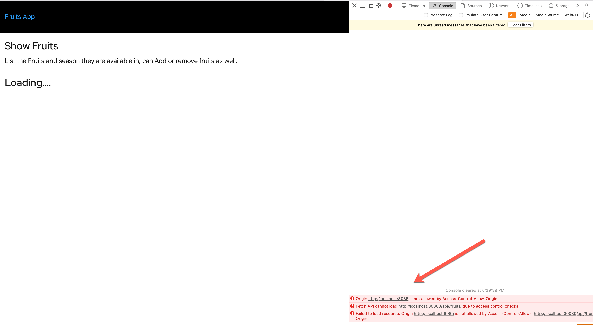
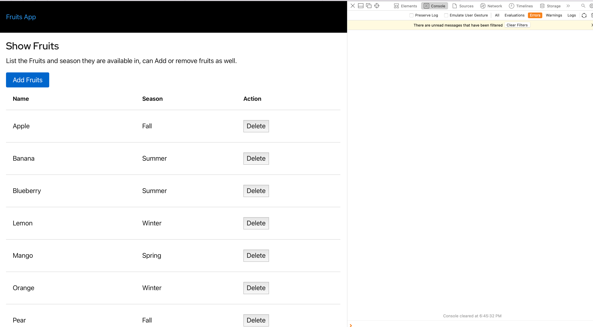

Deploy App¶
The demo application that will be deployed is a simple Fruits microservice. The source code the Fruits API is available here.
At the end of this chapter you would have known how to:
- Create Gloo Edge Gateway
- Configure Rate Limiting
- Configure WAF
- Configure CORS
Deploy Database¶
kubectl apply -k $DEMO_HOME/apps/microservice/fruits-api/db
Wait for the DB to be up
kubectl rollout status -n db deploy/postgresql --timeout=60s
Waiting for deployment “postgresql” rollout to finish: 0 of 1 updated replicas are available…
deployment “postgresql” successfully rolled out
Deploy REST API¶
kubectl apply -k $DEMO_HOME/apps/microservice/fruits-api/app
Wait for the REST API to be up
kubectl rollout status -n fruits-app deploy/fruits-api --timeout=60s
Waiting for deployment “fruits-api” rollout to finish: 0 of 1 updated replicas are available…
deployment “fruits-api” successfully rolled out
Gloo Edge¶
We have now deployed the Fruits API, in the up coming sections we will create the necessary Gloo Edge resources that will allow configure and access the API. To have more understanding on the core concepts check the Traffic Management documentation.
In the upcoming sections we will,
Upstreams¶
The Gloo Edge installation that as done as part of the demo is enabled to do auto discovery of the upstreams. The Fruits API that we deployed earlier would have been discovered as fruits-app-fruits-api-8080.
Let us check to see if thats available,
glooctl get upstream fruits-app-fruits-api-8080
-----------------------------------------------------------------------------+
| UPSTREAM | TYPE | STATUS | DETAILS |
-----------------------------------------------------------------------------+
| fruits-app-fruits-api-8080 | Kubernetes | Accepted | svc name: fruits-api |
| | | | svc namespace: fruits-app |
| | | | port: 8080 |
| | | | |
-----------------------------------------------------------------------------+
Route¶
A Route is a Gloo Virutal Service resource that allows us to access the API i.e. the services that are deployed on to Kubernetes.
apiVersion: gateway.solo.io/v1
kind: VirtualService
metadata:
name: fruits-api
namespace: gloo-system
spec:
displayName: FruitsAPI
virtualHost:
domains: # (1)
- "*"
routes:
# Application Routes
# ------------
- matchers:
- prefix: /api/ #(2)
routeAction:
single:
upstream: #(3)
name: fruits-app-fruits-api-8080
namespace: gloo-system
options:
prefixRewrite: /v1/api/ #(4)
- Domains that will be allowed by the Gateway
- The prefix to access the API
- The upstream that wil be used to route the request
- The url rewrite to do before passing the request to backend
Let us create the virutal service,
kubectl apply -n gloo-system -f $DEMO_HOME/apps/microservice/fruits-api/gloo/virtual-service.yaml
Check the status of the virtual service
glooctl get vs fruits-api
----------------------------------------------------------------------------------------------
| VIRTUAL SERVICE | DISPLAY NAME | DOMAINS | SSL | STATUS | LISTENERPLUGINS | ROUTES |
----------------------------------------------------------------------------------------------
| fruits-api | | * | none | Accepted | | / -> 1 destinations |
----------------------------------------------------------------------------------------------
Invoke API¶
We need to use the Gloo proxy to access the API, we can use glooctl to get the proxy URL,
export GLOO_PROXY_URL=$(glooctl proxy url)
Check if the API is accessible,
http $GLOO_PROXY_URL/api/fruits/
The command should return a list of fruits as shown,
[
{ "id": 8, "name": "Apple", "season": "Fall", "emoji": "U+1F34E" },
{ "id": 6, "name": "Banana", "season": "Summer", "emoji": "U+1F34C" },
{ "id": 5, "name": "Blueberry", "season": "Summer", "emoji": "U+1FAD0" },
{ "id": 4, "name": "Lemon", "season": "Winter", "emoji": "U+1F34B" },
{ "id": 1, "name": "Mango", "season": "Spring", "emoji": "U+1F96D" },
{ "id": 3, "name": "Orange", "season": "Winter", "emoji": "U+1F34A" },
{ "id": 9, "name": "Pear", "season": "Fall", "emoji": "U+1F350" },
{ "id": 2, "name": "Strawberry", "season": "Spring", "emoji": "U+1F353" },
{ "id": 7, "name": "Watermelon", "season": "Summer", "emoji": "U+1F349" }
]
Rate Limit¶
As part of this sectiobn we will configure Rate limiting.
apiVersion: ratelimit.solo.io/v1alpha1
kind: RateLimitConfig
metadata:
name: global-limit
namespace: gloo-system
spec:
raw:
descriptors:
- key: generic_key
value: count
rateLimit:
requestsPerUnit: 10 #(1)
unit: MINUTE #(1)
rateLimits:
- actions:
- genericKey:
descriptorValue: count
- Number of requests
- The duration for the request threshold, is this case 1 minute
Let us apply the rate limiting configuration,
kubectl apply -n gloo-system -f $DEMO_HOME/apps/microservice/fruits-api/gloo/ratelimit-config.yaml
Update the service with ratelimit,
kubectl apply -n gloo-system -f $DEMO_HOME/apps/microservice/fruits-api/gloo/virtual-service-ratelimit.yaml
Let us now send requests to the API, with our current configuration we should start to get HTTP 429 once we exceed 10 requests,
$DEMO_HOME/bin/poll.sh
Wait for a minute more to try polling again to see the requests getting executed successfully.
Web Application Firewall¶
A WAF protects web applications by monitoring, filtering and blocking potentially harmful traffic and attacks that can overtake or exploit them.
Gloo Edge Enterprise includes the ability to enable the ModSecurity Web Application Firewallfor any incoming and outgoing HTTP connections.
For this demo, let us assume that our application does not support Firefox yet so for any requests that come with Firefox browser agent need to be blocked and informed.
apiVersion: gateway.solo.io/v1
kind: VirtualService
metadata:
name: fruits-api
namespace: gloo-system
spec:
displayName: FruitsAPI
virtualHost:
options:
# -------- Web Application Firewall - Check User-Agent -----------
waf: # (1)
ruleSets: # (2)
- ruleStr: | # (3)
SecRuleEngine On
SecRule REQUEST_HEADERS:User-Agent ".*Firefox.*" "deny,status:403,id:107,phase:1,msg:'unsupported user agent'"
customInterventionMessage: "Firefox not supported" # (4)
domains:
- "*"
routes:
# --------------------- Application Routes -----------------
- matchers:
- prefix: /api/
routeAction:
single:
upstream:
name: fruits-app-fruits-api-8080
namespace: gloo-system
options:
prefixRewrite: /v1/api/
# ---------------- Rate limit config ----------------------
rateLimitConfigs:
refs:
- name: global-limit
namespace: gloo-system
- Define WAF rules
- The WAF block can have one or more
ruleSets - The rule inspects the
User-Agentheader - The message to display for rule voilations
Let us update the Virtual Service with WAF enabled,
kubectl apply -n gloo-system -f $DEMO_HOME/apps/microservice/fruits-api/gloo/virtual-service-waf.yaml
Try simulating the API request as if it was generated from Firefox browser:
http $GLOO_PROXY_URL/api/fruits/ User-Agent:Firefox
The request should with a response,
HTTP/1.1 403 Forbidden
content-length: 21
content-type: text/plain
date: Wed, 18 Aug 2021 11:24:46 GMT
server: envoy
Firefox not supported
No try the same request with any other user agent which should succeed.
http $GLOO_PROXY_URL/api/fruits/ User-Agent:Safari
CORS¶
Gloo Edge also supports configuring the CORS policies without the need to redeploy the backend API application. As part of this section we will extend our demo Fruits API with simple SPA.
Build the UI Application¶
Since the SPA are accessed from browser we need to rebuild the UI with th GLOO_PROXY_URL that the application need to use,
docker build --build-arg="GLOO_PROXY_URL=$GLOO_PROXY_URL" \
-t example/fruits-ui \
-f $DEMO_HOME/Dockerfile-UI $DEMO_HOME
Once the contianer is built let us run it,
docker run --rm -p 8085:8080 example/fruits-ui
When you open the localhost:8085 in the browser you will see application page like

When you open the browser’ developer tools console, you should notice the CORS errors like:

Update Virtual Service¶
To fix this we need to update the Virutal Service with CORS options,
apiVersion: gateway.solo.io/v1
kind: VirtualService
metadata:
name: fruits-api
namespace: gloo-system
spec:
displayName: FruitsAPI
virtualHost:
options:
# -------- CORS Config -----------
cors: # (1)
allowOriginRegex:
- '^http(s)?:\/\/localhost:[0-9]{4,5}$' # (2)
allowHeaders: # (3)
- origin
- content-type
allowMethods: # (4)
- DELETE
maxAge: 1d
# -------- Web Application Firewall - Check User-Agent -----------
waf:
customInterventionMessage: "Firefox not supported"
ruleSets:
- ruleStr: |
SecRuleEngine On
SecRule REQUEST_HEADERS:User-Agent ".*Firefox.*" "deny,status:403,id:107,phase:1,msg:'unsupported user agent'"
domains:
- "*"
routes:
# --------------------- Application Routes -----------------
- matchers:
- prefix: /api/
routeAction:
single:
upstream:
name: fruits-app-fruits-api-8080
namespace: gloo-system
options:
prefixRewrite: /v1/api/
# ---------------- Rate limit config ----------------------
rateLimitConfigs:
refs:
- name: global-limit
namespace: gloo-system
- Enable CORS options
- The Origin Regular Expression, this will allow all
localhost - The CORS headers that are allowed
- The methods that the orgins can excute
Now let us update the virtual service,
kubectl apply -n gloo-system -f $DEMO_HOME/apps/microservice/fruits-api/gloo/virtual-service-cors.yaml
Now try refreshing the browser url localhost:8085 and you will see a list of fruits as shown without any CORS errors.
